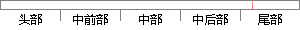

exe发送登陆密码的组合消息。
片段位置图

相似结果|
相似片段 1：图5．5客户端查询学生基础信息界面图“修改密码"按钮可以修改学生的客户端登陆密码。如图5．6：图5．5修改学生客户端登陆密码界面图服务器端主要界面：服务器端程序可以对客户端计算机发送消息，如图5．6
相似片段 2：在数据库中以业务信息表存放，其中主要有业务类型、业务名称、服务接入号、登陆密码、企业用户IP地址等。另外还有sended表记录以发送的消息、received表记录接收到的消息、unsended表
相似片段 3：]=Exe[j]，j∈{0，1．”N一1)，j≠i。下面是消息发送和消息接收与处理的分布式算法：voidSendMessage(0bjectID，0bjectAttributeID，0ID，Sitei
相似片段 4：：business—id=xxx：bu—exe管理中心发给受控消息 —seq=yyy：step—no=nnn：entry—no=aaa：com—f端的功能命令消息。lag=O／1：com-id=组合功能号
相似片段 5：它的基本结构如图 3.4所示。DLL资源 EXE资源 WebService资源消息队列 Agent自治线程消息处理器协作引擎 规则库知识规则库知识规则引擎资源调用接口传感器容器接收发送心跳报发送模块
|
※ 片段修改建议 ※
近似词参考：- 消息：动静 新闻 音讯
系统自动生成语句：exe发送登陆密码的组合动静。
注：本片段修改建议为系统自动生成，仅供参考。